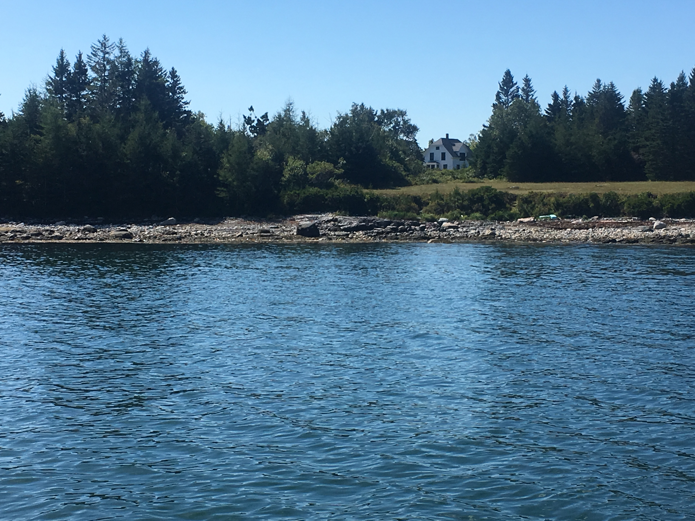

The Cloud House (44° 10' 25.95", -68° 24' 26.73")
We came to Swan’s Island in the fall of 2017 almost by chance. We wanted to take the ferry out to Swan’s Island, check it out for the day, and come back to MDI. As it turns out the ferry was full, no car slots left, but they were able to squeeze our Honda VF700 Interceptor on. We spent just a few hours there, not wanting to wait to the last ferry. In that short time we went to the lighthouse, enjoyed a delicious lunch at TIMS and managed to cover most of the paved roads, driving by the Cloud house and noting the “for sale” sign.

We returned to Swan’s Island for a week in July of 2018 and began to look for a property in earnest. We were staying on the western part of the island, three miles down a twisting, bumpy, mostly single lane seasonal road. We didn’t want that kind of limited access so we started to narrow our property search to the "Atlantic" side of the island. That area offered ready access with paved roads, more privacy than in the villages on Burnt Coat Harbor and a wonderful view of the mountains of Acadia. We made a subsequent trip to Swan's Island in September, via a boat we rented for a day. From that vantage point we were able to see the property from the water and get a better sense what a view from the house would be with some clearing.
{kind=link}
{kind=link}
In the next months we set our sights on acquiring the Cloud house. It had privacy, plenty of land and water frontage and a long history, being built in the 1850’s. After an inspection to determine if the house was solid and worth restoring (it was) we made an offer and it was accepted. An overview of the house as it existed when we purchased it is here . The prior owner’s family had owned it for 70 years and left us a wonderful note welcoming us.
{kind=link}
The reconstruction of the house began in late 2018 and extended to the fall of 2020. The layout of the completed house, room by room is:
- Entry-The two story entry to the house is a new feature. The centerpiece of the entry is a large chandelier in the form of a large sundial (yes, the arrow points north).
- Living Room-The living room is a fine place to read, watch TV or puzzle the day, or evening, away.
- Dining nook-The dining area is a compact space in front of the seaward facing window with room for 4-6 people in the chairs and banquette seating that surround a small-ish wood table.
- Kitchen-The kitchen is an L-shaped open area that includes all the amenities you would expect.
- Bathroom(1st floor)- This bath is a full bath providing a second shower/bath as well as typical toilet/sink facility
- Guest Bedroom-The guest bedroom features custom cherry furniture(built in Ephraim's wood shop) that includes a queen size bed. The bedroom also has a decent size closet to provide storage in addition to the armoire.
- Master Bedroom
- Bathroom(second floor)
- Deck-The new deck is quite an upgrade over the prior design. It is a bit wider and wraps around the north side of the house. This allows for a spacious seating area and a separate space for the grill. The new deck is covered in composite decking allowing for a durable surface, easy to clean up as well.
Island transportation
We keep two registered vehicles permanently on the island that guests can utilize if they want to leave their vehicle on the mainland. One vehicle is an SUV, known as the "Tuna Can". It is a Toyota Highlander and can accomodate as many as seven passengers with the third row seating deployed. The other vehicle is a bit more specialized, being a Ducati Multistrada motorcycle, and is known as "Mr. Beakes". Using this does require familiarity with operating a motorcycle. It is expected we will be bringing a Vespa Elettrica to the island, an electric scooter. This will be more readily ridden that a motorcycle, with a max speed of 30mph for leisurely rides around the island.
{kind=link}
{kind=link}
{kind=link}